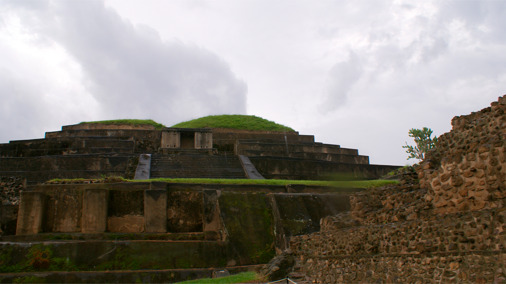
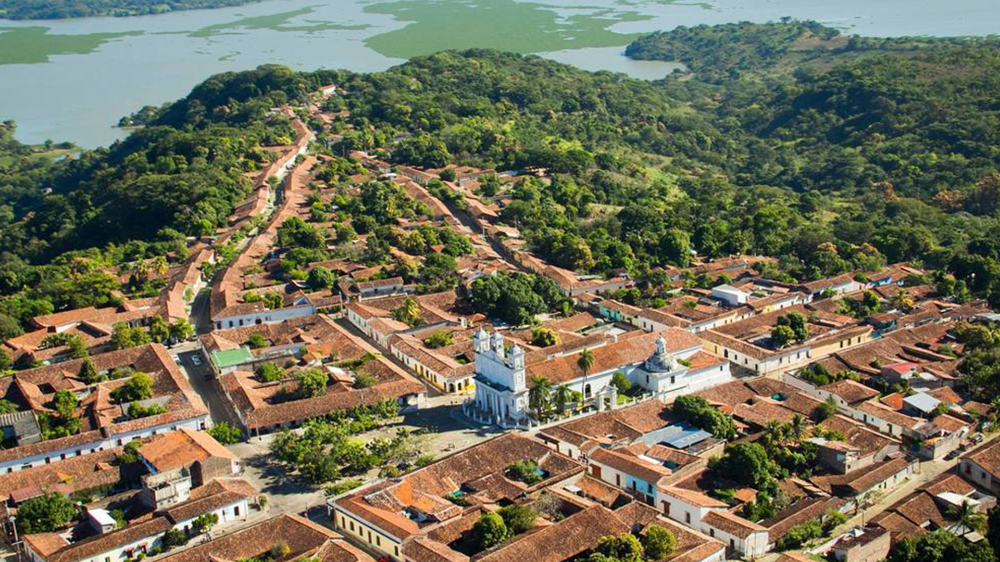
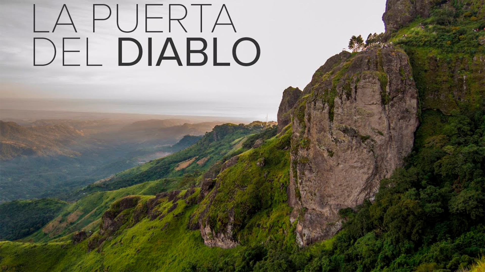
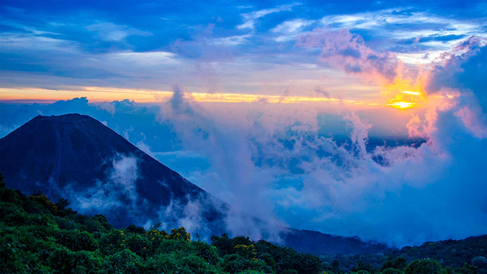
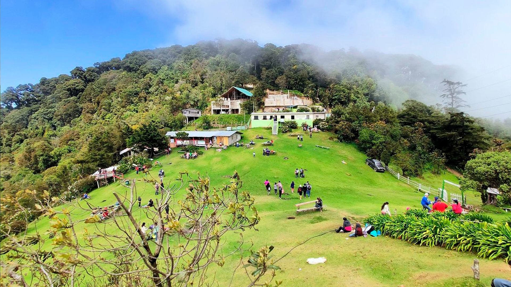

LAGO COATEPEQUE
Descubre por qué es uno de los destinos turísticos más populares de El Salvador.
VER


SUCHITOTO
Una hermosa ciudad colonial con un rico patrimonio cultural y una vibrante escena artística.
VER

PUERTAL DEL DIABLO
Una atracción turística única en El Salvador, situada en el municipio de Conchagua en la región oriental del país.

CERRO VERDE
Una joya natural en El Salvador, con su impresionante paisaje de montañas verdes y volcanes activos.
VER

EL PITAL
Una cumbre montañosa en El Salvador que ofrece vistas panorámicas impresionantes, lleno de aves y paisajes verdes.
VER